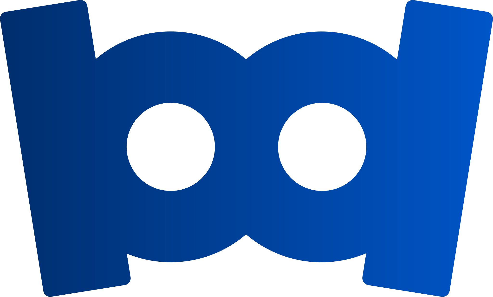

<section class="section hub" id="hub"><div class="wrap">
<div class="hub-heading"><div><span class="eyebrow">Seu marketing, de perto</span><h2>Você acompanha.<br>A gente faz acontecer.</h2></div><div><p>Campanhas, criativos, contatos e próximos passos no mesmo lugar. Veja como você acompanha o trabalho da Bādon e participa das aprovações.</p></div></div>
<div class="hub-demo" id="hub-demo">
<header class="demo-sidebar">
<div class="demo-brandbar"><div class="demo-brand"><strong>Bādon <span>Hub</span></strong></div><div class="demo-profile"><span>SE</span><div>Serena Saúde &amp; Estética<small>Visão do cliente</small></div></div></div>
<div role="tablist" aria-label="Demonstração do painel" aria-orientation="horizontal" class="demo-tabs">
<button type="button" id="tab-visao" role="tab" aria-controls="demo-panel" aria-selected="true" data-view="visao"><span>Meu negócio hoje</span></button>
<button type="button" id="tab-crm" role="tab" aria-controls="demo-panel" aria-selected="false" tabindex="-1" data-view="crm"><span>CRM</span></button>
<button type="button" id="tab-criativos" role="tab" aria-controls="demo-panel" aria-selected="false" tabindex="-1" data-view="criativos"><span>Anúncios e aprovações</span></button>
<button type="button" id="tab-roteiros" role="tab" aria-controls="demo-panel" aria-selected="false" tabindex="-1" data-view="roteiros"><span>Roteiros</span></button>
<button type="button" id="tab-plano" role="tab" aria-controls="demo-panel" aria-selected="false" tabindex="-1" data-view="plano"><span>Plano e entregas</span></button>
</div></header>
<div class="demo-workspace">
<div class="demo-topbar"><span>Serena / <b id="demo-breadcrumb">Meu negócio hoje</b></span><span class="demo-badge">Demonstração · dados simulados</span></div>
<div class="demo-panel" id="demo-panel" role="tabpanel" aria-labelledby="tab-visao" tabindex="0">
<div class="demo-title"><div><h3>Olá, equipe Serena.</h3><p>Resultados, trabalho da Bādon e próximos passos em um só lugar.</p></div><span class="demo-period-label">Últimos 30 dias</span></div>
<div class="demo-summary"><h4>R$ 3.000 investidos em mídia. 100 contatos gerados.<br><span>R$ 30,00 de custo médio por contato.</span></h4><div class="demo-summary-grid"><div><b>O que aprendemos</b><p>A peça de apresentação teve o menor custo por contato. Vamos explorar novas variações dessa abordagem.</p></div><div><b>O que estamos fazendo</b><p>Uma nova rodada de criativos e a revisão do caminho entre o anúncio e o agendamento.</p></div><div><b>Precisamos de você</b><button type="button" data-go-view="criativos">Revisar os materiais da campanha ↗</button></div><div><b>Próxima entrega</b><button type="button" data-go-view="plano">Acompanhar a produção das peças ↗</button></div></div></div>
<div class="overview-metrics"><div><span>Investimento em mídia</span><strong>R$ 3.000</strong><small>No período</small></div><div><span>Contatos gerados</span><strong>100</strong><small>Pelas campanhas</small></div><div><span>Custo por contato</span><strong>R$ 30,00</strong><small>Investimento ÷ contatos</small></div><div><span>Agendamentos</span><strong>30</strong><small>Registrados pela recepção</small></div></div>
<div class="overview-bottom"><section class="demo-chart"><div class="demo-chart-heading"><h4>Contatos por dia</h4><small>Últimos 7 dias</small></div><div class="demo-bars" role="img" aria-label="Contatos nos últimos sete dias: segunda 2, terça 4, quarta 3, quinta 5, sexta 4, sábado 3, domingo 4; total 25"><div style="--bar:40%"><b>2</b><i></i><small>Seg</small></div><div style="--bar:80%"><b>4</b><i></i><small>Ter</small></div><div style="--bar:60%"><b>3</b><i></i><small>Qua</small></div><div style="--bar:100%"><b>5</b><i></i><small>Qui</small></div><div style="--bar:80%"><b>4</b><i></i><small>Sex</small></div><div style="--bar:60%"><b>3</b><i></i><small>Sáb</small></div><div style="--bar:80%"><b>4</b><i></i><small>Dom</small></div></div></section><section class="demo-sales-funnel"><h4>Do contato à venda</h4><p>Contato não é venda. Acompanhe cada etapa.</p><dl><div><dt>Contatos</dt><dd>100</dd></div><div><dt>Agendamentos</dt><dd>30</dd></div><div><dt>Comparecimentos</dt><dd>24</dd></div><div><dt>Vendas</dt><dd>8</dd></div></dl><button type="button" data-go-view="crm">Abrir CRM ↗</button></section></div>
<section class="demo-economics" aria-labelledby="demo-economics-title"><h4 id="demo-economics-title">O que essas vendas representam</h4><div class="demo-economics-grid"><div><span>Ticket por protocolo</span><strong>R$ 900</strong><small>Exemplo: pacote facial de 3 sessões</small></div><div><span>Receita bruta contratada</span><strong>R$ 7.200</strong><small>8 vendas × R$ 900</small></div><div><span>Receita bruta / mídia</span><strong>2,4×</strong><small>Não representa lucro ou retorno líquido</small></div></div><details><summary>Como esta simulação foi montada</summary><p>Cenário ilustrativo de 30 dias: R$ 3.000 em mídia ÷ 100 contatos = R$ 30 por contato. Dos 100 contatos, 30 agendam uma avaliação, 24 comparecem e 8 contratam um protocolo. Conversões adotadas: 30% para agendamento, 80% de comparecimento e 33,3% de fechamento entre quem comparece.</p><p>O custo de mídia por venda seria R$ 375. Nos últimos 7 dias deste exemplo, são R$ 750 de mídia e 25 contatos, incluídos nos totais mensais. O valor de R$ 900 é uma referência de pacote, não de uma sessão avulsa. A indicação e o preço de cada procedimento cabem à clínica.</p><p>Estes números não são resultados de clientes, médias comprovadas do mercado ou promessa de desempenho. A receita contratada não equivale a dinheiro recebido e não desconta gestão, equipe, insumos, impostos, cancelamentos ou demais custos. Oferta, região, atendimento e campanha mudam o resultado.</p></details></section></div><div class="demo-footer"><span id="demo-status" role="status">Explore as abas. Nenhuma alteração é salva ou enviada.</span><button type="button" id="demo-tour">Reproduzir tour</button></div></div></div>
<noscript><p>Ative o JavaScript para experimentar CRM, criativos e roteiros. A visão geral acima e todo o conteúdo da página continuam disponíveis.</p></noscript>
<div class="hub-benefits"><p><b>Clareza para decidir.</b> Veja a origem dos contatos e a continuidade do atendimento.</p><p><b>Contexto para aprovar.</b> Criativo, roteiro e objetivo reunidos no mesmo lugar.</p><p><b>Critério para melhorar.</b> Compare indicadores sem confundir cliques com agendamentos.</p></div>
</div></section>
